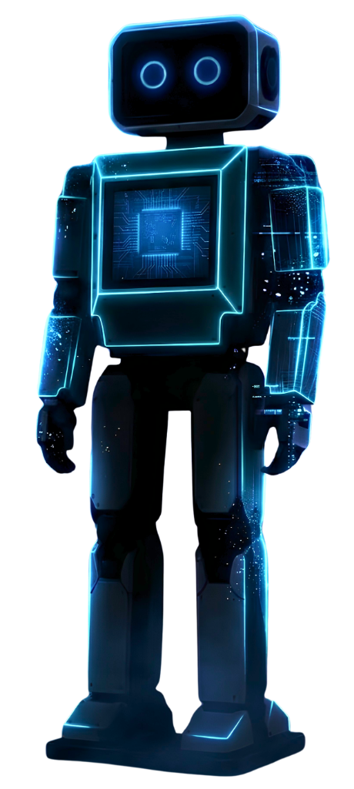

The Apex Animal of Advanced Systems
Software, automation, and business systems engineered to move first, track precisely, and outlast the competition.
A smart robot that takes care of repetitive tasks, starting at the front desk. Say “Sai-no-bot”.

From raw sensor data to intelligent decisions — we design and build every layer of your connected system with precision and scale in mind.
From core software to full business infrastructure, we design and ship systems that are precise, resilient, and built to scale with intent.
Web, mobile and custom platforms engineered for real workloads, not demos. We focus on clean architecture and high performance.
Architecture, infrastructure and technical strategy built for scale and uptime. Resilient systems that form the backbone of your business.
Intelligent workflows and integrations that remove repetitive work at the root, allowing your team to focus on high-impact tasks.
Growth planning and market positioning grounded in data, not guesswork. We align technical solutions with your business goals.
We apply IoT and AI automation expertise across diverse industries, each with unique constraints and extraordinary potential.
Smart factory automation and predictive maintenance
Precision farming and soil & crop monitoring
Remote patient monitoring and medical IoT
Infrastructure sensing and urban AI management
Smart grid optimization and consumption analytics
Connected vehicle telemetry and fleet tracking
Our methodology ensures precision at every stage of the project lifecycle.
We study the problem, the market, and the constraints before writing a single line of code.
Architecture and experience are planned together, not bolted on afterward.
Iterative, tested delivery with clear milestones and constant visibility.
Launched, monitored, and supported. The system keeps running after we ship.
Whether you're starting from scratch or scaling what you have, CYNOCOR is ready to move with you.